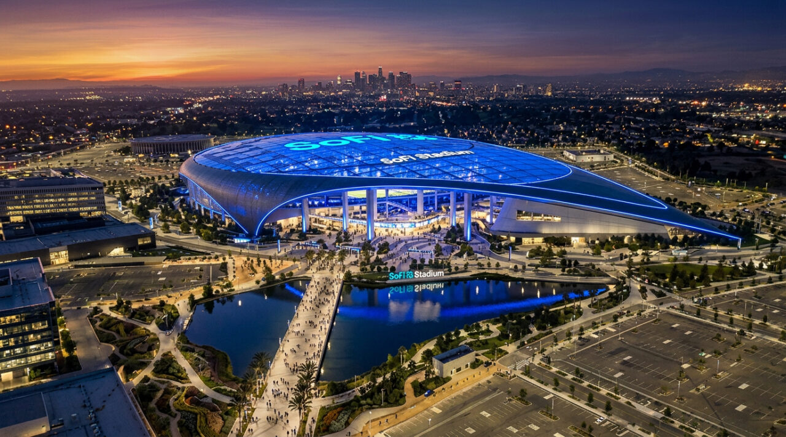
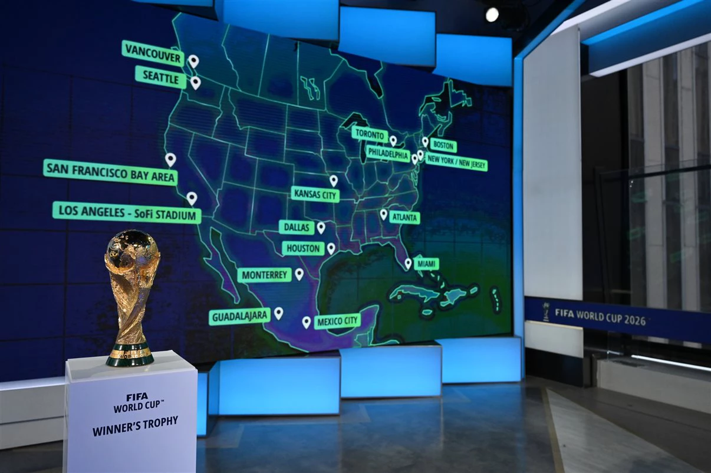

11 Jun 2026 | Abertura
México x África do Sul
Estádio Azteca, Cidade do México
Agenda Essencial
Acompanhe confrontos e classificações, uma das partes mais interessantes para quem gosta de seguir cada detalhe da Copa.
11 Jun 2026 | Abertura
Estádio Azteca, Cidade do México

12 Jun 2026 | Grupo B
SoFi Stadium, Inglewood, California

13 Jun 2026 | Grupo C
MetLife Stadium, East Rutherford, New Jersey

14 Jun 2026 | Grupo D
AT&T Stadium, Arlington, Texas

| Seleção | P | J | V | E | D | SG |
|---|---|---|---|---|---|---|
| Brasil | 6 | 2 | 2 | 0 | 0 | +4 |
| Escócia | 3 | 2 | 1 | 0 | 1 | 0 |
| Haiti | 1 | 2 | 0 | 1 | 1 | -2 |
| Marrocos | 1 | 2 | 0 | 1 | 1 | -2 |